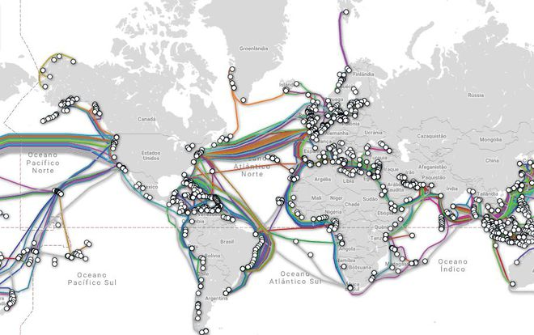
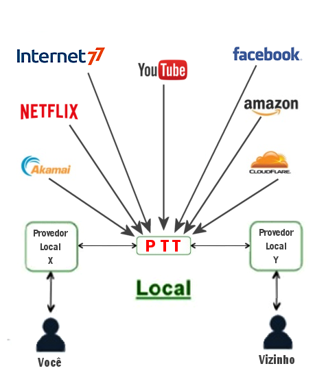
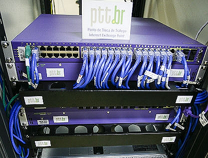

Como funciona
A internet conecta bilhões de dispositivos ao mesmo tempo. Isso é possível graças aos protocolos de conexão entre redes de computadores.
- Quando você conecta dois computadores, cria uma rede (network).

Uma rede simples, formada por dois computadores conectados
- Quando alguém conecta vários computadores, forma-se uma outra rede.

Rede um pouco mais complexa, com vários computadores conectados
Fazendo o uso de protocolos de internet, vocês podem conectar ambas as redes, formando uma internetwork (internet). Através do IP, os dados são endereçados e encaminhados da maneira correta.

Computadores conectados a roteadores, que são conectados a outros roteadores, formando uma rede de redes
Conexão entre as redes
Milhões de cabos de fibra óptica conectam as redes ao redor do mundo. As informações passam por vários pontos antes de chegar no seu dispositivo.
Conexões dos cabos de fibra óptica
Os pontos de troca de tráfego (PTTs) permitem que as informações transitem entre redes de provedores diferentes. Diversas empresas que usam a internet podem se conectar nesses pontos para receber e transmitir dados.
Funcionamento de um PTT
Um dos PTTs espalhados pelo Brasil